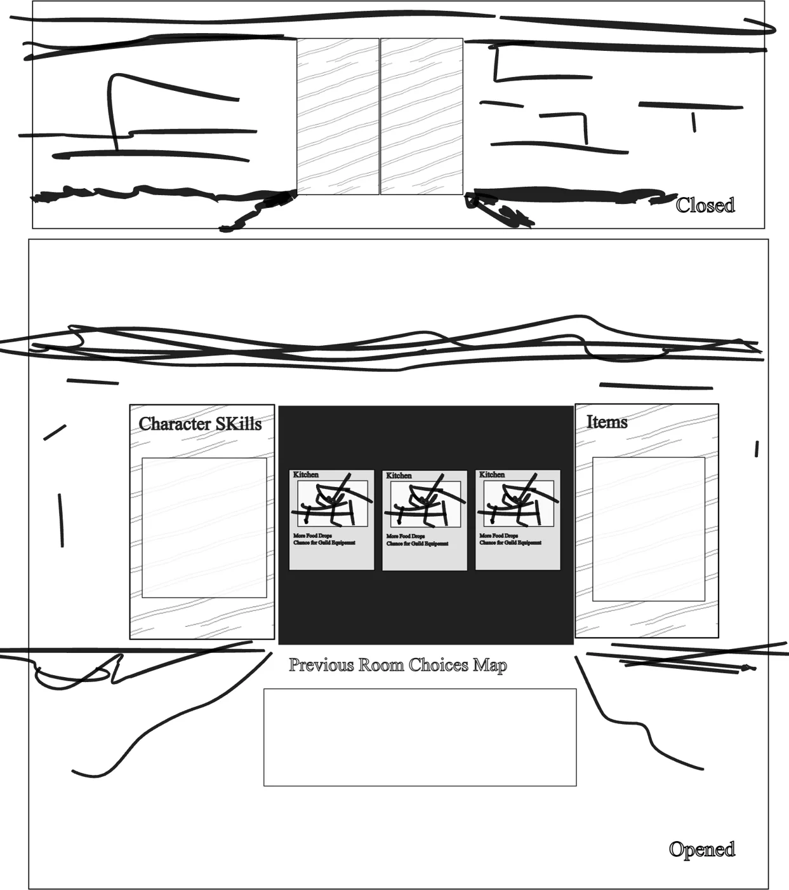
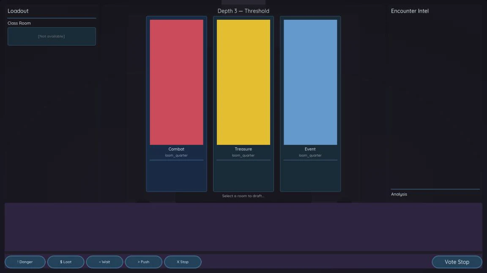

Every action RPG needs something to do once you’ve seen the world. Fiber’s answer is dungeon drafting: the party builds the dungeon together, a room at a time, before and while they run it. This month it went from a spec to a first playable UI.
Keys
A dungeon starts with a key. Keys drop in the world and from bosses, and you can craft them with the same operations as gear: reroll, upgrade, corrupt. A key has three parts:
- Type picks the biome, which sets the pool of rooms, encounters and hazards.
- Grade, Common to Legendary, raises difficulty and rewards.
- Affixes bend the whole run, like “enemies deal 20% more damage” or “chests drop an extra item.”
Because keys are crafted, preparing for a run starts before anyone walks in. You’re shaping what kind of dungeon you’ll get.
The first spec: draft, then run
My first pass, written as a milestone spec, made the draft a phase before the run. Everyone gathers at the door, and players take turns in a fixed order. On your turn you see a hand of three or four room cards from the biome’s pool, pick one, and can spend a modifier from a shared pool on it, like double elites, a hidden treasure branch or a fraying floor. The key’s grade sets how many rounds there are. The last room is always the boss. Then the whole map is revealed and you go in.
Same key, different party, different dungeon. Preparation is crafting the key, strategy is the draft, and execution is the run. Clearing a dungeon can even drop a weaker copy of the key, so good runs can keep feeding themselves.
Stephen’s version: the draft is the run
Then Stephen Cassidy took the spec and pushed it somewhere better. In his brainstorm, the draft isn’t a lobby before the dungeon; the draft is the dungeon. You open a gate, and at each doorway the party picks the next room from three cards as you go. You only see where you’ve been, where you are and what’s next.
That opens up ideas a pre-planned map can’t have:
- Push your luck. The deeper you go, the better the rewards and the more likely a boss shows up, and you still have to make it back out. Knowing when to turn around is part of the game.
- A hidden encounter. Every run has a secret: a dangerous monster, a new friend to invite back to your guild town, a special artifact. You don’t know which. Rooms leave clues, like claw marks, scorched stone or dropped supplies, and you work it out by comparing them across rooms rather than filling a bar.
- Your build matters to the draft. Class abilities and gear can change which rooms show up or how they play.

The door UI
Stephen built the first version of his door UI. When a gate opens, the screen splits into four parts:
- The doorway, in the middle, holds the three room cards.
- The back of the left door holds your loadout, including a room only your class can draft.
- The back of the right door holds encounter intel, where the clues you’ve found get pieced together.
- The pathway along the bottom is for party talk: quick calls like danger, loot, wait, push and stop, and a vote to stop going deeper.
He also wrote room cards for all five biomes and gave each door a “personality” that shapes which cards it tends to offer. The arch and background change with the biome, and the party draws behind the cards as silhouettes.

The card art is placeholder and the dungeon behind the door doesn’t exist yet, but the shape is clear. Next is turning drafted rooms into real rooms and syncing the draft across a party.